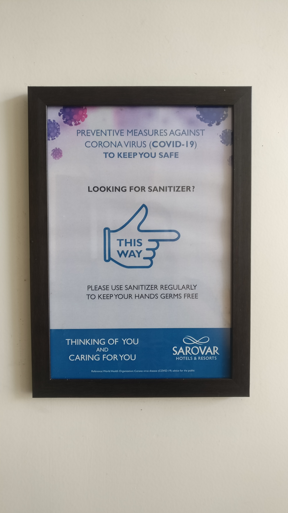
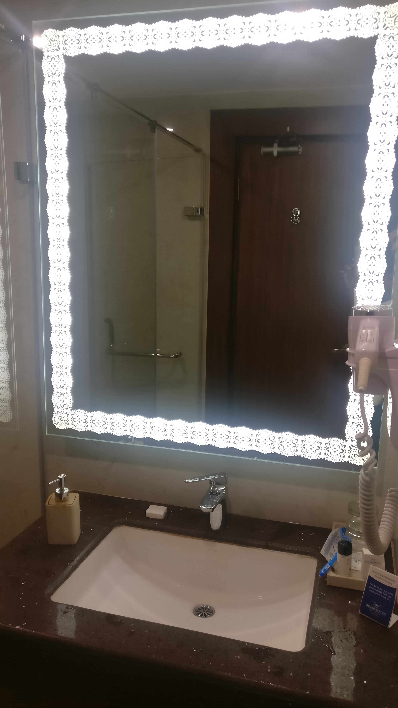

Hotel review: Sobit Sarovar Portico, Palolem (Goa)
If you are coming to Goa, especially South Goa, don't see here and there, come straight to Sobit Sarovar Portico, Palolem, Canacona. What a great hotel this is!!!
This hotel is luxurious, posh, new, and great. The hotel provides very good quality service.
The reception staff is very smiley and cooperative.
The reception staff always greets the guests with a smile and provides the guests with any information that they asked for.

The gym in the hotel is very big and very well equipped.
The gym in the hotel has its own trainer, so when you come to this hotel, you don’t have to worry about your fitness at all !!!!
I visited this hotel in 2020, which is during this COVID times, but the hotel takes utmost care for your safety.
There is a strict safety protocol followed by the hotel. There are sanitizers everywhere, the rooms are sanitized before check-in, the staff does not come inside the room after you come, and all services like housekeeping and in-room dining are contact-less.
If you book at this hotel in advance, then you can send all your id cards and documents by email, making the check-in process totally contactless.
When you check-in, before you can take your luggage inside your room, the hotel staff properly sanitizes your luggage.
They check your temperature at check-in, and also every time you get out of the hotel premisses.
As per the hotel, they check the temperature of each of their employees and check for any symptoms.

Talking about the rooms, the rooms in this hotel are big and luxurious.
Each room has a spacious balcony, which has a beautiful view of the pool and a small greenery garden which is constantly maintained by the hotel's gardeners.
There are 2 seat outs in balconies, so you can sit in the balcony overseeing beautiful views, having sips of coffee in the middle, from the cup which is kept on the coffee table which is beside your seat.
If you are coming as a couple, then what other place there would be in this hotel to spend quality time with your partner, then your own balcony!!!!

If you are a family of 2+1 or 2+2, then also you need not worry, the extra bed which is given by the hotel as big as the master king bed, so your children will have a sound sleep at night, during the stay.
The bathroom and the toilet in the rooms are big and luxurious.
Luxurious toiletries of Biotique company are provided in the bathroom, making your bathing experience in this hotel even better.

Due to these COVID times, the menu is a bit limited, but they tried to include something from all cuisines (I will put a photo of the menu).
But don't see here and there, take only biryani. The restaurant makes such good biryani, I bet you didn't taste better biryani than this.
Also, there is a set menu package available in the restaurant, at very reasonable rates (I got this set menu package for Rupees 450 for veg, and Rupees 500 for non-veg per person).
And they change the items in the set menu daily, so if you are planning for a longer stay, you can take this set menu every day for lunch and dinner, and you will get different dishes every day, so you won't be bored.
And also, you will not need to get out of the safety of the hotel. (But don't forget to try biryani for one meal).
Because of these COVID times, there is no breakfast buffet, but a breakfast menu is given, u can order whatever you want.
The breakfast menu is a bit limited, it could have been more diverse and coved big. But whatever is there on the menu, it is very very tasty!!!!
Only that, I think the hotel should give some more power to the restaurant servers.
Because this is a 4-star hotel, a guest may think that they should get whatever they request, but I think because restaurant servers are not given more powers, the servers cannot cater to all the requests.
(I am telling this because for the set menu which I talked about earlier, if I asked if I can get a small change from the set menu, the server politely denied).
You can be sure of one thing, that whatever comes out from the kitchen of this restaurant, it will be very tasty.
So, kudos to restaurant chef and cooks!!!
Except for the restaurant, in every part of the hotel, you get whatever you ask for.
At last, this is why you come to a star hotel and not a lodge.
From bath amenities provided by housekeeping to services provided by the reception, you just ask, and you won't be disappointed.
The hotel is very close to the beautiful and calm Palolem beach, which is a plus point.
The hotel also gives bicycles on rent.
As you roam around the property, you will see beautiful art pieces scattered all around.
Be it beautiful paintings of houses in Goa, or antique Goan artistic things, if you are an art person or a history-loving person, this place is heaven for you.
At last, I would like to say that this is a great hotel, the best hotel in Goa as per me.
(I am sure that any negative point I talked about, will be solved by the time you come to this hotel because I will make sure the GM of the hotel and the hotel management sees this review, and act on the negative points immediately).
See you soon in my next hotel review!!!!!